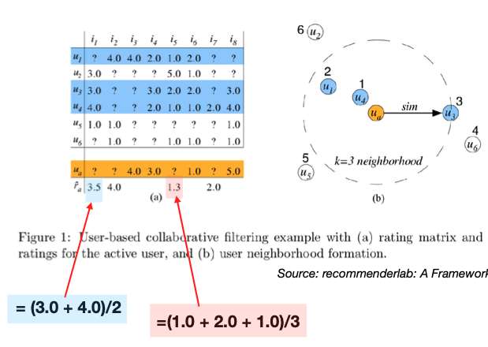

13.4. UBCF and IBCF
13.4.1. UBCF
Let’s examine the operation of user-based and collaborative filtering. In user-based filtering, we first identify similar users. To run this algorithm, we often need to specify the k-nearest neighbors; let’s say k=3.
Consider a user depicted in orange at the bottom of our dataset.
{kind=link}
Our first step is to employ similarity metrics to ascertain the three nearest neighbors for this user, who are highlighted in blue.
Next, we’ll use the ratings from these three users to infer the ratings for the user in orange. This could involve a simple or weighted average; here, we’ve chosen a simple average for illustration.
Now, let’s examine how we derive the rating of 3.5 for the 1st item. We’re unable to use the first user’s rating for this item since it’s absent, but we can average the ratings from the other two users: (3 + 4) / 2 = 3.5. This average becomes our estimated preference for the 1st item for the user in orange.
Moving on to the 2nd time, only one of the 3-nearest neighbors has a rating, which is 4.0. We take this value directly.
Similarly, For the 5th item, we average the ratings from the three similar users to predict the preference for the user in orange: (1.0 + 2.0 + 1.0)/3 = 1.3.
- Enhancements:
We can extend this to weighted averages, using weights based on proximity to the user of interest.
In practice, to reduce missing ratings among the k-nearest neighbors, we can selecting the nearest neighbors who have rated the specific item in question. Consequently, the selected nearest neighbors of users may vary contingent upon the item under consideration.
13.4.2. IBCF
For item-based collaborative filtering, we consider similarities between items instead of users.
Below, a similarity matrix for items is constructed.
The top three entries in each row are highlighted in bold, since we consider only 3-nearest neighbors.
For a test user, represented in orange, who has provided ratings for items 1, 5, and 8, these respective columns are highlighted in blue. These are the items the test user has rated, and their ratings will serve as the foundation for our predictions.
{kind=link}
For the test user in question, the aim is to predict the ratings for the unreviewed items using the known ratings for items 1, 5, and 8. The predicted rating \(\hat{r}_{ai}\) for item \(i\) from user \(a\) is calculated using a weighted average, where the weight is the similarity measure between items:
The prediction is missing if the set \(S(i) \cap \{j: r_{aj} \ne ?\}\) is empty, meaning if none of the similar items have been rated by the user.
For example, for the 2nd item, since none of its 3-nearest neighbors have been rated by this test user, we cannot generate a prediction for this item.
To predict the rating for item 3, we evaluate its similarity to items 1, 5, and 8. Suppose its similarity to item 1 is 0, to item 5 is 0.4, and to item 8 is 0.5. These similarity scores are utilized to weight the test user’s ratings for items 5 and 8, which are 4 and 5, respectively. After normalizing these weights (to account for the sum of the similarities), we estimate the rating for item 3 to be 4.6.
In the case of ties in similarity, we may consider an increased number of neighbors by adjusting the value of k. For instance, if there’s a tie that results in k=3, we would take into account four neighbors instead of three to enhance the prediction accuracy.
Similar to UBCF, to reduce missing ratings among the k-nearest neighbors, we can employ a strategic selection of nearest neighbors based on available item ratings, which might vary per item. As a solution, we can dynamically adjust the neighbors chosen based on the item in question.
13.4.3. Pros and Cons
One key advantage of collaborative filtering is that it doesn’t rely on pre-defined features since user interactions become the features, potentially recommending items outside the user’s typical profile.
However, this method can’t start from day one; it requires a build-up of user-item interaction data. New items without interaction data can’t be recommended, often referred to as the cold start problem. There is also a risk of a popularity bias where popular items are recommended to everyone, negating the personalization aspect.
13.4.4. IBCF vs UBCF
Both UBCF and IBCF share a common computational challenge: efficiently identifying the nearest neighbors within a vast dataset. Approximation algorithms, clustering techniques, and efficient data structuring are essential to mitigate computational costs.
The choice between UBCF and IBCF often depends on the specific context and platform. For instance, e-commerce sites and streaming services, such as Amazon and Netflix, have found that IBCF tends to be more effective. This is likely because item similarities are more consistently defined than user similarities, making item similarity a more reliable metric compared to the unpredictability of human preferences.
IBCF also offers computational advantages. While both UBCF and IBCF must efficiently pinpoint nearest neighbors, IBCF has the benefit of offloading much of its computational load to the offline phase.
In UBCF, there’s no distinct training phase, and the computational effort is deferred to the prediction stage. At this point, similarities between users are calculated on-the-fly, which can be resource-intensive in real-time.
On the other hand, IBCF concentrates the bulk of its computation during the training phase. It involves creating and sorting a comprehensive item-to-item similarity matrix. While this upfront computation is intensive, it facilitates a more straightforward prediction phase. However, despite the ease of prediction, the pre-computed similarity matrix requires careful memory management during the prediction phase, ensuring they can be stored and accessed efficiently to generate recommendations.